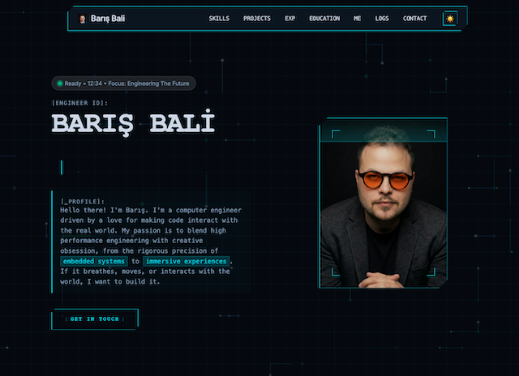
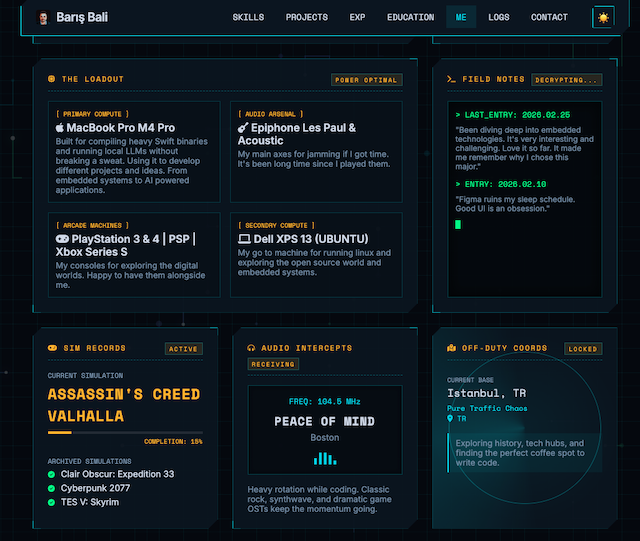
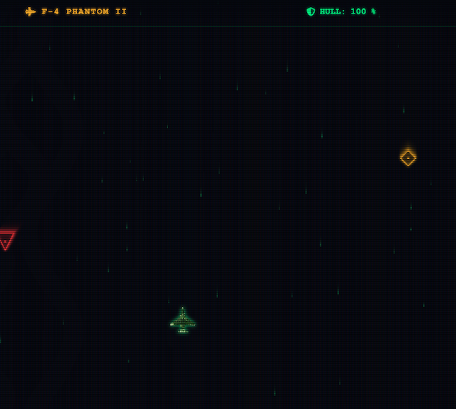
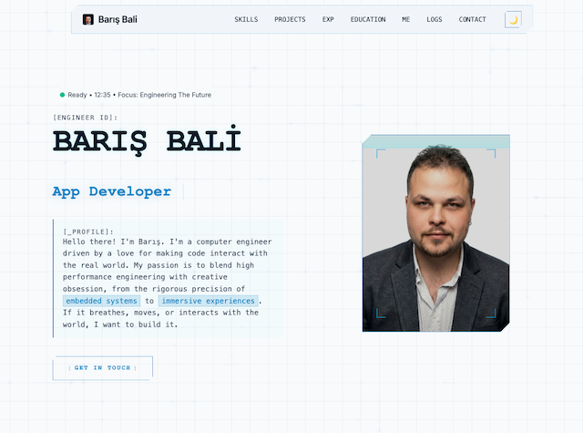

SYSTEM TARGET: PERSONAL PORTFOLIO V1
|
STATUS: OPERATIONAL
UTC: --:--:--
FRAMEWORK-FREE WEB ENGINEERING // ARCHITECTURE SPECIFICATION
PERSONAL PORTFOLIO V1
High-Performance Vanilla JS Web Architecture with Custom CSS HUD Design System
INTERFACE CAPTURES




SYSTEM PHILOSOPHY
Built from scratch with zero third-party framework dependencies. Eliminating runtime bundles allowed for complete optimization over DOM rendering, memory allocation, and visual responsiveness across all hardware targets.
CORE HIGHLIGHTS
- Pure Vanilla JS: Zero external script dependencies, minimizing initial paint times.
- State Persistence: LocalStorage sync preserving theme preferences across sessions.
- Fluid Typography & Micro-Animations: CSS custom properties driving GPU-accelerated transitions.
HTML5
CSS3
Vanilla JS
Zero Frameworks